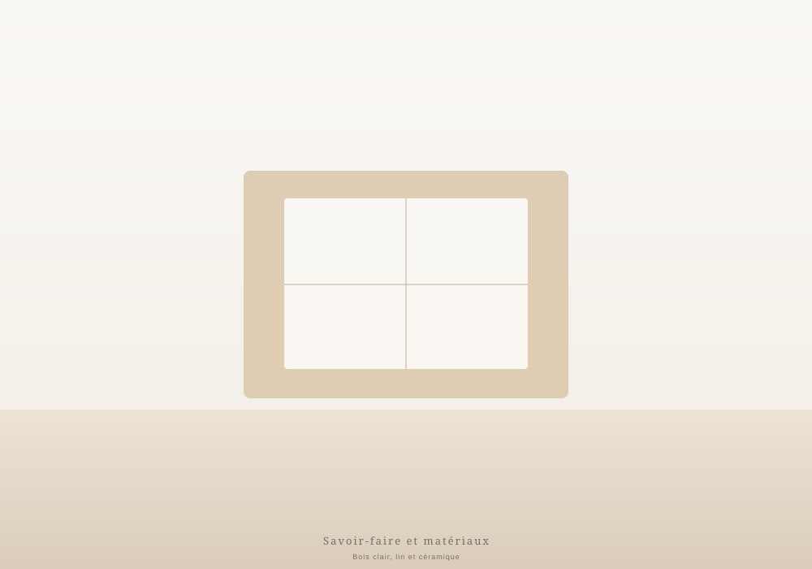
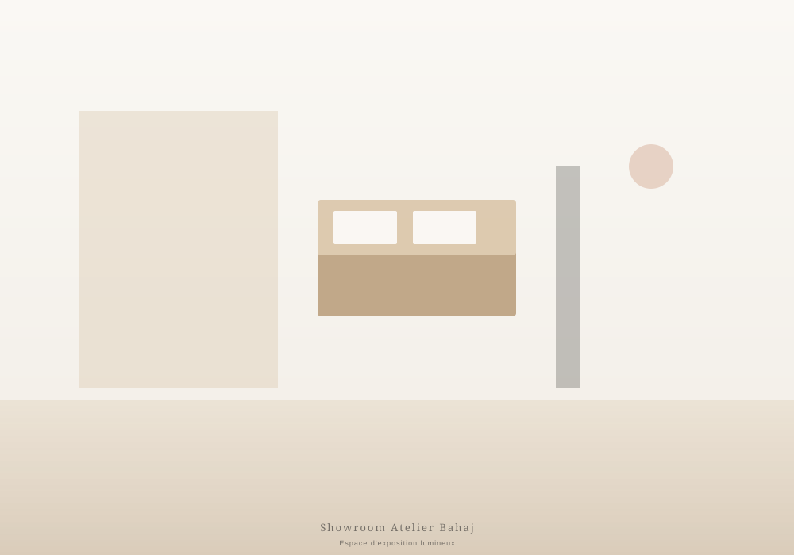

Atelier Bahaj, le mobilier qui illumine
Une marque de mobilier contemporain née au Maroc, dédiée aux intérieurs lumineux, chaleureux et authentiques. Nous sélectionnons des pièces pensées pour le confort, la durabilité et l'harmonie de votre maison.
Une vision née de la lumière marocaine
Atelier Bahaj est né d'une conviction simple : un intérieur réussi est avant tout un intérieur dans lequel on se sent bien. Au Maroc, la lumière naturelle, les matières brutes et les couleurs douces façonnent depuis toujours des espaces de vie chaleureux et accueillants. Nous avons voulu traduire cette sensibilité dans une collection de mobilier contemporain, pensée pour les foyers marocains d'aujourd'hui.
Notre démarche repose sur la sélection rigoureuse de pièces qui allient esthétique, confort et fonctionnalité. Nous travaillons avec des matériaux naturels — bois clairs, lin, cuir, céramique — pour créer des intérieurs qui traversent les modes et les saisons. Chaque meuble est choisi pour sa qualité, sa durabilité et sa capacité à s'intégrer dans des espaces de vie variés, des appartements urbains aux maisons plus spacieuses.
Au-delà du mobilier, Atelier Bahaj est une approche : celle d'un accompagnement personnalisé, d'un conseil sincère et d'un service client attentif. Nous croyons que choisir un meuble est un moment important, et nous mettons un point d'honneur à guider chacun de nos clients avec attention et expertise.

Le confort, la lumière et la durabilité
Trois principes guident chacune de nos sélection : le bien-être au quotidien, la clarté des espaces et la longévité des pièces.
Le confort d'abord
Un meuble doit avant tout se vivre. Nous privilégions les assises profondes, les matières douces au toucher et les proportions pensées pour le bien-être quotidien. Le confort n'est jamais sacrifié au profit du design.
La lumière en priorité
Nos collections privilégient les teintes douces, les bois clairs et les tissus naturels qui captent et diffusent la lumière. L'objectif : des intérieurs lumineux, aérés et chaleureux, où l'on se sent immédiatement bien.
La durabilité comme exigence
Nous choisissons des pièces conçues pour durer : structures robustes, matières résistantes et finitions soignées. Acheter un meuble Atelier Bahaj, c'est investir dans un objet qui traversera les années sans perdre son caractère.
Les matières naturelles
Bois clair, lin, cuir naturel, céramique : nous privilégions les matières authentiques et chaleureuses, qui patinent joliment avec le temps et apportent une âme à votre intérieur.

Vivez le mobilier en personne
Nous vous accueillons dans notre showroom pour une expérience d'achat différente. Loin des catalogues abstraits, vous pouvez toucher les matières, tester le confort des assises, mesurer les proportions et visualiser les pièces dans un cadre pensé pour vous inspirer. Nos conseillers sont présents pour répondre à vos questions et vous guider dans vos choix.
Que vous cherchiez un canapé pour votre salon, une table pour votre salle à manger ou un aménagement complet, le showroom est le lieu idéal pour affiner votre projet. Nous prenons le temps d'échanger sur votre espace, vos envies et votre budget pour vous proposer des solutions adaptées.
Préparer ma visiteDes intérieurs personnalisés et cohérents
Nous croyons qu'un intérieur réussi raconte une histoire : celle de celles et ceux qui l'habitent. C'est pourquoi nos collections sont composées pour se compléter, mais aussi pour s'adapter à des univers variés. Un canapé Atelier Bahaj peut dialoguer avec une table ancienne comme avec des pièces contemporaines ; une chaise en bois clair s'intègre aussi bien dans un appartement urbain que dans une maison de campagne.
Notre rôle est de vous accompagner dans cette composition. Nous écoutons vos besoins, nous observons votre espace, et nous vous proposons des ensembles cohérents qui respectent votre style de vie. L'objectif n'est jamais d'imposer un modèle, mais de vous aider à créer un intérieur qui vous ressemble et dans lequel vous vous sentez pleinement chez vous.
Explorer nos collectionsPour les foyers marocains
Atelier Bahaj est une marque marocaine, au service des foyers marocains. Notre engagement se traduit par un accompagnement de proximité et un service client attentif à chaque étape.
Proximité locale
Une marque ancrée au Maroc, qui comprend les modes de vie et les intérieurs marocains.
Livraison adaptée
Un service de livraison organisé dans plusieurs villes du Maroc, pour recevoir vos meubles sereinement.
Conseil dédié
Une équipe à votre écoute, en showroom comme à distance, pour répondre à toutes vos questions.
Service après-vente
Un suivi après votre achat, parce que notre relation ne s'arrête pas à la livraison.
Venez découvrir Atelier Bahaj
Que vous ayez un projet précis ou simplement envie de découvrir nos collections, notre équipe vous accueille avec plaisir. Contactez-nous ou passez nous voir au showroom.